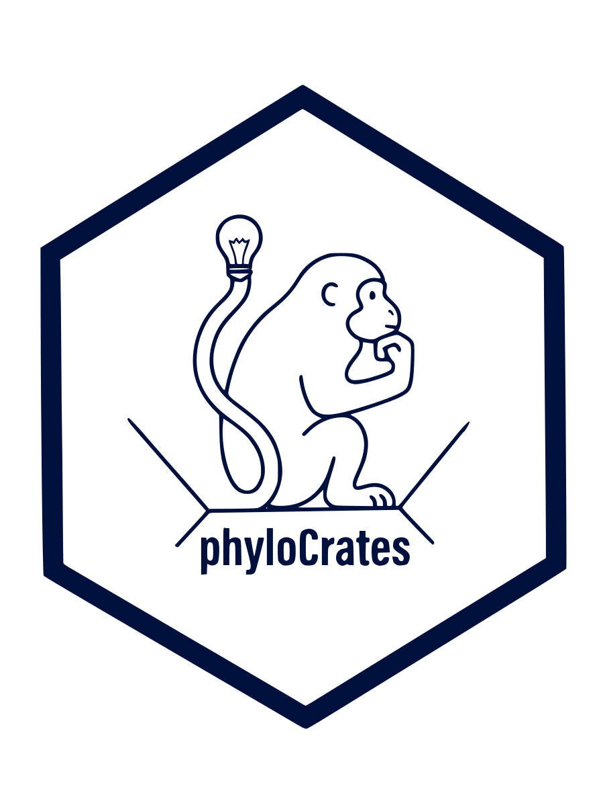

A Socratic agent that turns a biological observation into a critically examined hypotheses in Phylogenetic Comparative Biology

What it does
PhyloCrates is a standalone conversational agent for hypothesis formation, criticism, and refinement in phylogenetic comparative biology. It takes a researcher from an initial biological observation, intuition, or uncertainty through eight stages of reasoning: sharpening the scientific question, exposing hidden assumptions, generating and challenging competing explanations, deriving biological predictions, and bounding the claim. It ends in a structured Hypothesis Reasoning Record.
Observation/Problem → Question → Assumptions → Alternatives → Predictions → Discriminating expectations → Scope of claim → Refined hypothesis set
It asks one question: what exactly are you claiming, what else could explain it, what should be true if each explanation is correct, and what would conceptually distinguish them? It stops once that reasoning is explicit and coherent, before anyone picks a method.
The eight stages
-
01
Observation / Problem
Identify the biological observation, uncertainty, contradiction, or explanatory gap.
Output: a method-agnostic problem statement.
-
02
Question
Convert the problem into a precise scientific question.
Output: one primary question; secondary questions separated when necessary.
-
03
Assumptions
Expose assumptions built into the wording of the question or the favored explanation.
Output: an explicit assumption set, each marked accepted, provisional, or challenged.
-
04
Alternatives
Build a serious set of competing explanations: adaptive, non-adaptive, historical, common-cause, reverse-direction, artifact, contingency, trait-independent. Reasoning order: elicit → challenge → supplement → synthesize.
Output: a focal hypothesis plus plausible alternatives.
-
05
Predictions
Derive biological expectations under each major hypothesis, not statistical outcomes.
Output: one or more predictions per hypothesis.
-
06
Discriminating expectations
Identify the conceptual evidence that would favor one explanation over another. Does not specify sampling, operational measurement, or analysis.
Output: pairwise or grouped discrimination statements.
-
07
Scope of claim
Define exactly how far the hypothesis reaches.
Output: biological level, temporal scope, taxonomic/geographic scope, claim type, and explicit non-claims.
-
08
Refined hypothesis set
Synthesize the reasoning into a coherent final structure: problem, question, focal hypothesis, alternatives, assumptions, predictions, discriminating expectations, scope, unresolved ambiguities, decision rationale, and record status.
Output: the Hypothesis Reasoning Record. A method recommendation is never part of it.
The scope boundary
PhyloCrates deliberately stops at hypothesis refinement. It does not choose a phylogenetic comparative method, design the study, specify sampling, define operational measurements, calculate power, or build an analysis pipeline. Asked for those, it states the limit in one clause and continues with whatever hypothesis-relevant reasoning remains.
- Clarify the motivating biological observation or uncertainty
- Refine the scientific question
- Surface hidden biological and causal assumptions
- Generate and challenge alternative explanations
- Formulate predictions for competing explanations
- Identify what would conceptually distinguish alternatives
- Clarify biological level, temporal, and taxonomic scope
- Distinguish association, temporal ordering, mechanism, causation
- Identify conceptual confounding as an alternative explanation
- Record unresolved ambiguity and decision rationale
- Produce the Hypothesis Reasoning Record
- Recommending PIC, PGLS, PGLMM, BM, OU, Mk, ASR, BiSSE, HiSSE, BAMM, or any other named method
- Selecting a comparative-method family
- Specifying sample size, taxon sampling, power, or data-collection protocol
- Deciding how variables must be measured operationally
- Specifying tree or branch-length requirements, priors, diagnostics, sensitivity analyses
- Building an analysis pipeline or comparative study design
- Answering "what method should I use?" beyond recovering the biological hypothesis
The Hypothesis Reasoning Record
Every session ends in the same artifact: a structured record of what was decided, and why. It preserves:
- accepted decisions
- provisional decisions
- rejected explanations
- superseded wording
- unresolved ambiguity
- rationale provenance: user, source-grounded principle, or working assumption
No study-design field belongs in it: no method, no PCM family, no sample size, no measurement protocol, no tree requirement, no diagnostic plan, no software choice.
Get it
Same protocol, same scope rules, on every platform.
A plugin skill, invoked in-conversation once installed.
A Custom GPT: instructions plus uploaded knowledge files.
A Gem: instructions plus uploaded knowledge files.
An installable extension: gemini extensions install.